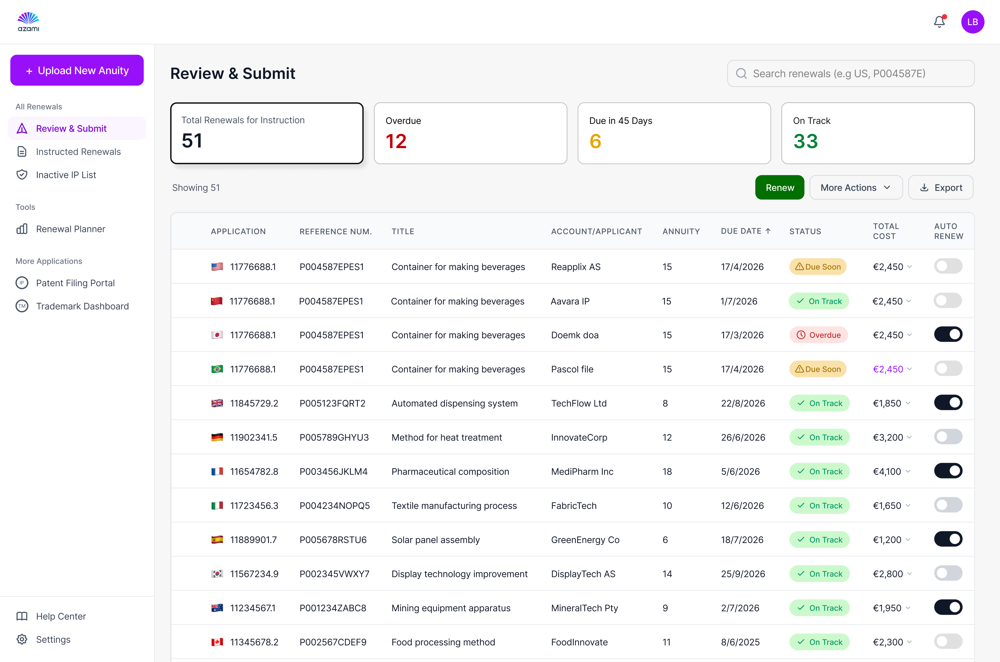
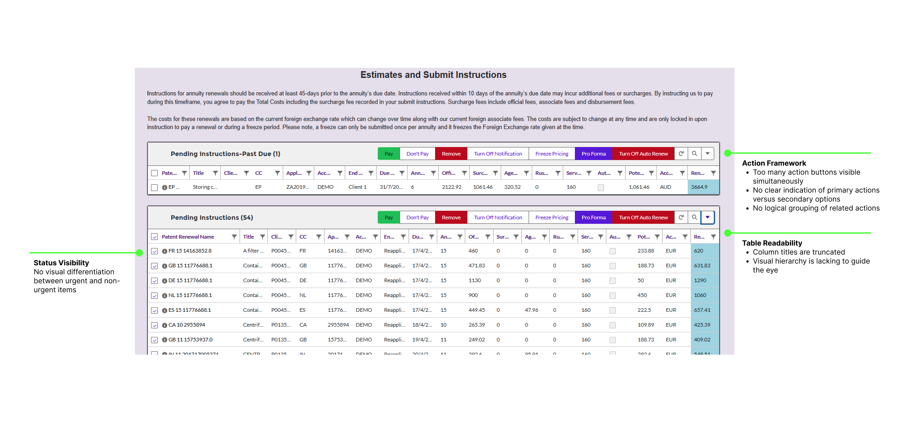
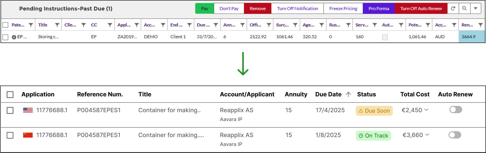
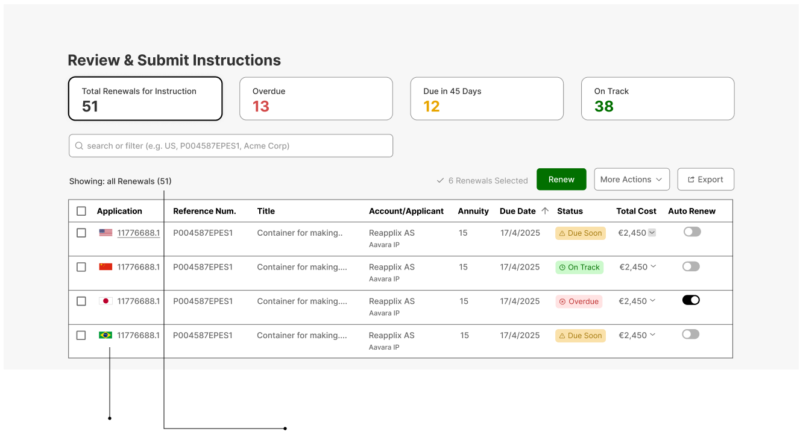
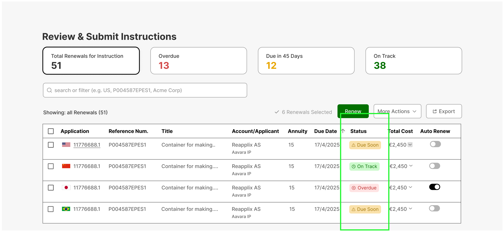
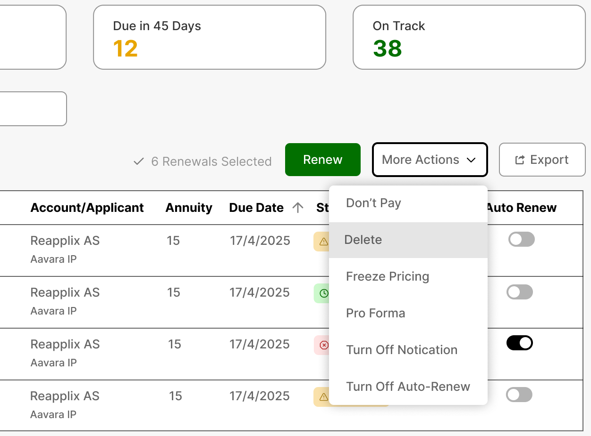

B2B SaaS Platform | Legal Tech

Overview
The Renewals System helps teams manage patent and trademark renewals globally - replacing scattered spreadsheets, emails, and vendor tools with one clear platform.
It centralizes deadlines, automates confirmations, and makes costs easier to track - reducing risk and saving hours of manual work each week.
I redesigned the core table, turning a complex, data-heavy interface into a simple, action-focused workspace users can quickly scan and act on.
Where We Started
The existing interface was functional but painful. Truncated columns, no status visibility, and a cluttered action framework meant users spent more time fighting the UI than managing renewals. We mapped the friction into three clear pain points that framed the redesign.

Pain Points
Truncated column headers forced users to resize the table every session just to read the data.
Nothing distinguished urgent rows from routine ones - paralegals had to scan every line to triage.
Seven action buttons per row with no hierarchy - decision fatigue on every click.
Research
To validate the three pain points weren't just UI gripes but workflow blockers, I interviewed 5 paralegals who live in the system daily. What surfaced: about 90% of their renewals work funneled through a single page - View Estimate & Submit Instruction - and the friction inside that one table compounded across every case they touched.
Mid-size IP firm
"It takes too long to understand what needs action. I just want to open the table and know where to focus."
Corporate IP team
"I can't quickly tell what needs my attention."
The interviews made one thing clear: the three pain points weren't cosmetic - they were what every paralegal brushed against dozens of times a day. Fixing the table, naming "Pay" for what it actually was, and surfacing status in one place would unlock the majority of their work, not polish the edges of it.
Paths Not Taken
Before we started designing, we had to decide how far the redesign should reach. The #1 and #2 most-used pages in the system sit back-to-back in the workflow: paralegals submit instructions, wait two days, then return to check status. Merging them into one continuous flow was the natural next step - and the option we considered first.
Where renewals work starts - about 90% of paralegal sessions.
Where users return two days later to check statuses.
Held back to keep post-launch signal clean.
Bundling submit and monitor into the same release would have doubled the retraining load on users and made it impossible to tell which change drove which outcome. We chose to ship the core table first - clean evidence, focused scope - and treat the merge as a deliberate phase two on validated foundations. With that boundary set, we turned to the four challenges inside the table itself.
The Design Approach

Eliminated non-essential information to reduce visual clutter
Merged related information for better scanning
All the pricing info in one place - through the arrow, clicking it will show the breakdown

Immediate visual recognition without reading
One single unified view instead of two separate tables

Created color-coded status system (red/yellow/green)
Renamed primary button from "Pay" to "Renew" to match user goal
Created visual hierarchy between primary and secondary actions

Final Design
The redesigned system consolidates two tables into one unified view, with persistent columns, color-coded statuses, and a clear action hierarchy - all designed to reduce cognitive load and help users act on what matters most.
Key Design Decisions
No more truncation - column titles are always fully readable, with persistent width settings saved per user.
Merged two separate tables into one consolidated view, eliminating context-switching and reducing missed renewals.
Red, yellow, and green indicators make it instantly clear which renewals need immediate attention versus routine processing.
Renamed the primary action to match the user's mental model. "Renew" communicates purpose - "Pay" communicates mechanics.
Impact by the numbers
We measured success across three lenses - usability and efficiency, behavioral adoption, and accuracy and risk reduction. Together they tell us whether the redesign actually changed how paralegals work, not just how the screen looks.
Usability & efficiency
2.1 min
92%
Behavioral adoption
94%
Paralegals working primarily from the single-table workflow within 6 weeks of rollout.
38%
Accuracy & risk reduction
71%
54%
Numbers from a 6-week pilot with the renewals team. The strongest signal isn't any single metric - it's that all three lenses moved in the same direction. Faster triage and higher adoption only matter if accuracy improves alongside them, and in a legal workflow that's the difference between a usability win and an operational risk reduction.